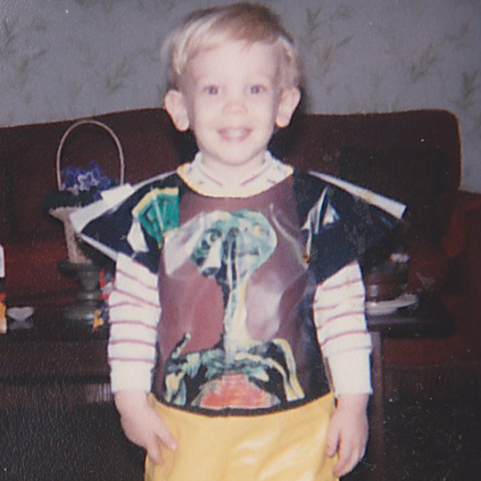
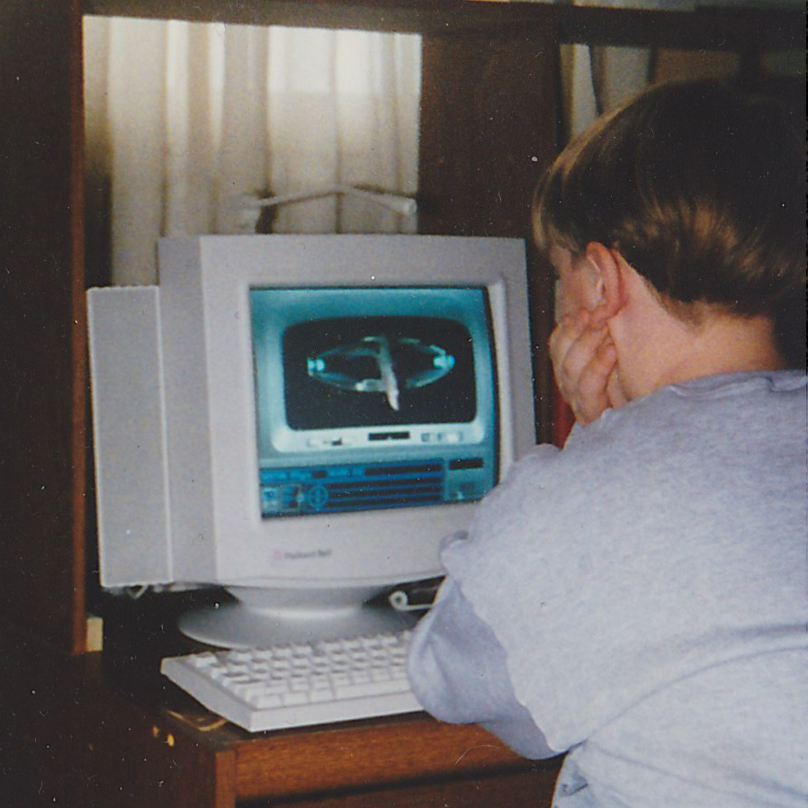
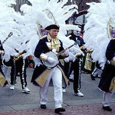
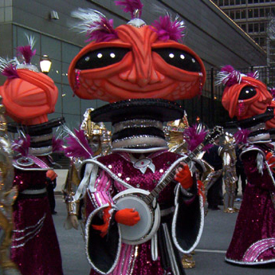
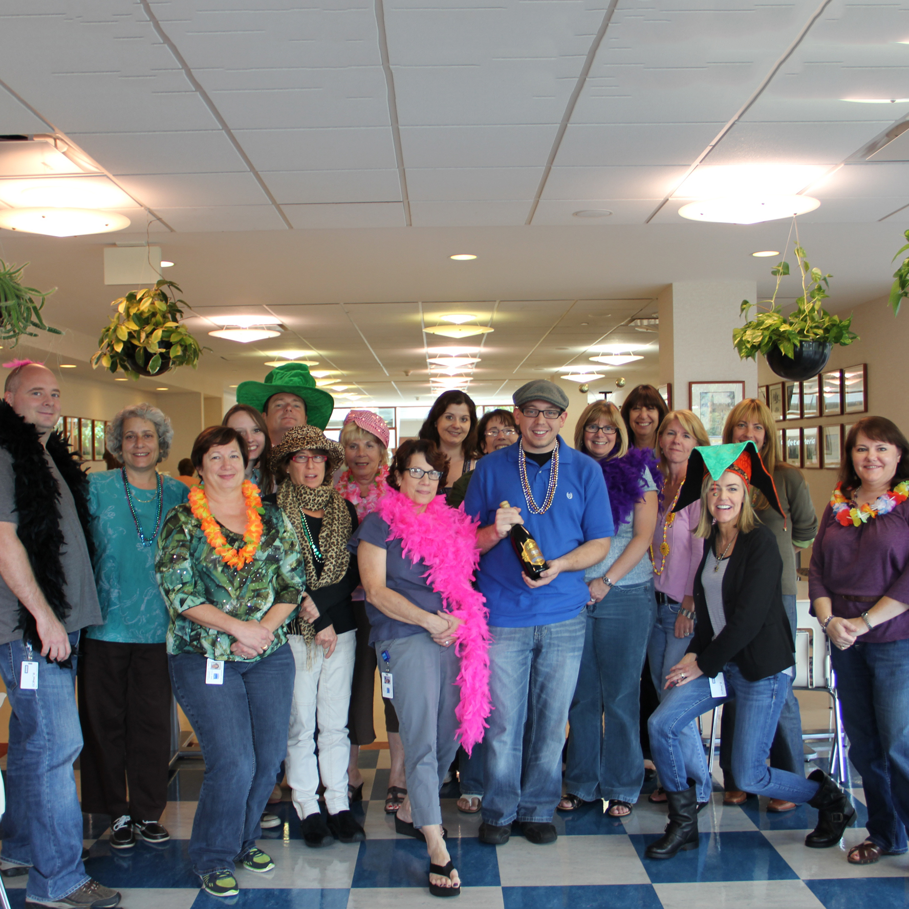
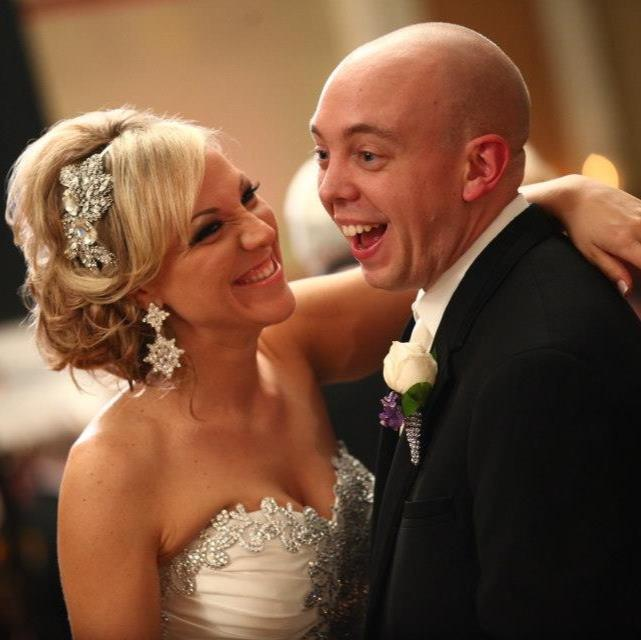
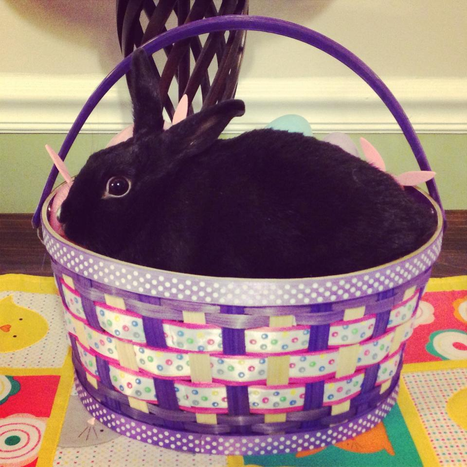

Work
Portfolio Samples
Fralinger Centennial Celebration
Graphic Design

Jefferson Feature Pages
Web Development
String Band Database
Web Development
View My LinkedIn Profile
In addition to these pieces, find out more about me professionally on my LinkedIn profile which I keep up-to-date. Feel free to connect with me!
View My GitHub Profile
Also, check out some of the code I've put up on GitHub and follow along as I learn the latest trends in full-stack JavaScript and other technologies.
View My WordPress Archive
If you came here to see my WordPress blog, I no longer maintain it. However, you can still view a static snapshot of my old site.
Music
Strumming and Mumming
Oh, the places you'll go... with a banjo!
It all started when my dad first asked me to join the new Irish American String Band, take tenor banjo lessons with him, and participate in the Philadelphia New Year's Day Mummers Parade. Here we are 15 years, at least 6 banjos, and 3 different string bands later, and the banjo has taken me places that I never thought possible.
My main instrument is now the plectrum banjo, which I play as a member of the Fralinger String Band and several traditional jazz and Dixieland bands when the opportunities arise. With the Fralinger band, I've literally traveled around the world, performing in myriad parades and festivals including the International Chinese New Year Parade in Hong Kong and the Mardi Gras parades in New Orleans. As a member of Fralinger since April of 2001, I was fortunate enough to be a part of our record-setting, eight-consecutive Mummers Parade championships. It's an honor to perform with such talented musicians and represent the United States and the City of Philadelphia while entertaining people with this traditional American instrument.
Visit Fralinger.org for more information about Fralinger and the Philadelphia Mummers.
YouTube
SoundCloud
About
Who is this Brian character anyway?
-

1983 through the 90s
A Geeky Kid From the Burbs
I've always been into video games and futuristic sci-fi movies for as long as I can remember. However, it was because of an old fashioned Dixieland banjo bar my dad played at called Spanky's Pub that my parents even met. Raised in Bucks County, PA, some of my favorite memories include going to Space Port in the Oxford Valley Mall, spending hours upon hours at Sportland America, and going bowling with my grandmom in the junior league at Delmor Lanes. Here I am rocking an ET costume from the late 80s that my mom thought looked good for Halloween.
-

Christmas 1995
My First Real Computer
Sure, it had more fancy plastic ornamentation than actual computing power, but this Packard Bell Force 862CDT my dad got me for Christmas was my gateway drug to the Internet through an AOL dial-up connection on our only phone line, much to my grandmom's chagrin. It could play Doom for Windows 95 like nobody's business! Here I am fighting the Romulans in Star Trek: A Final Unity.
-

Mummers Parade 2000
Humble Banjo Beginnings
After many years of my dad trying to get me to play the old banjo he had in the attic, I finally agreed to go with him to the newly-organized Irish American String Band rehearsal at a Northeast Philly VFW post and take free banjo lessons. This would turn into one of the most important decisions of my life. You can see our humble-yet-momentus start in the parade for yourself over on YouTube.
-

January 2003
The Championship Fralinger String Band
Although I spent some time in other string bands and joined Fralinger in 2001, the space year was the one that started the band's record-setting, eight-consecutive wins and brought me my first of ten Mummers Parade championships.
-

September 2006
The LSAC Years
It was on the phones at the Law School Admission Council helpdesk that I first leared the importance of user experience on the Web. A few years in technical support eventually led to a position in the communications department where I created and modified webpages in the interest of accessibility, using strict XHTML and CSS standards.
-

November 12, 2011
The Hamburg Wedding
This was the day I married the most amazing person I’ve ever met. My wife, Andrea, is a very dedicated pediatric nurse practitioner. She also goes by sandyflipflops18 on YouTube where you can find her famous videos of the Mummers Parade. She's a saint for being so supportive and putting up with my nonsense.
-

Holy Thursday 2012
Java Bean Comes Home
We have a pet rabbit named Java who is ironically not named after any programming language. She is the best bun in all the land. Here's a picture of her celebrating her second Easter. Chances are that she ate the plastic grass out of the basket.
-
September 2012 to the Present
Jefferson
Currently, I am a front-end web developer at Jefferson. During my time here I've honed my HTML/CSS/JS skills, made a ton of banner ads, hacked my way through PHP and C#, created responsive web pages, earned my Sitecore certification, and completed a master's certificate in applications development at La Salle University.
-
"Time is the most valuable thing a man can spend."
—Theophrastus